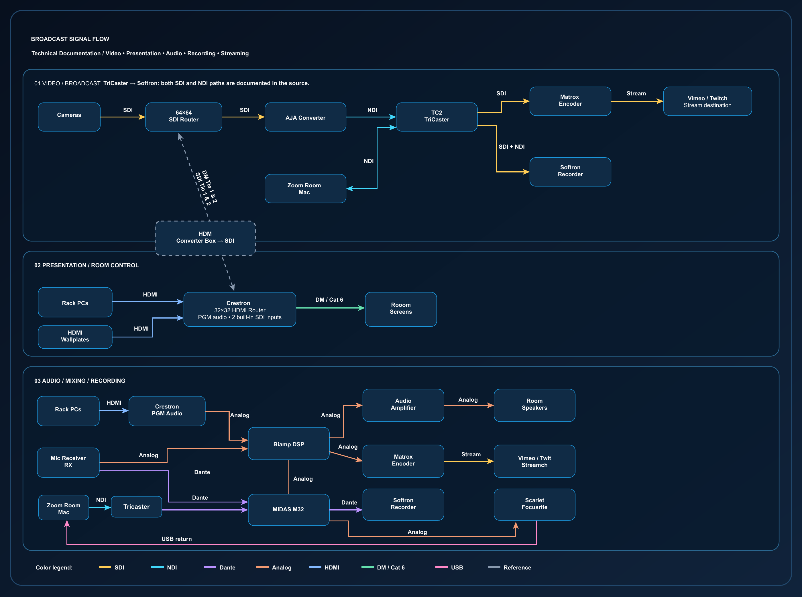

Broadcast Signal Flow
& Systems Documentation
An original Adobe Illustrator signal-flow reference I created to understand, document, and support an existing broadcast production environment.
Project Overview
I independently developed a visual reference showing how video, audio, switching, routing, conversion, recording, and streaming equipment connected within a professional broadcast room. I used my firsthand operational experience and technical notes to make complex signal paths easier to follow when preparing productions and troubleshooting issues.
This is my original documentation of an existing system. I operated and supported the equipment; I did not design, install, or program the underlying AV infrastructure.
Technical Documentation — Signal Flow
The diagram below uses my latest exported Illustrator artwork. Click the diagram to enlarge it, then click again to return to its normal size.

Click to enlarge. Click the enlarged image again, or press Escape, to return to the page.
Video & Broadcast Path
- Camera and playback feeds enter video routing and conversion equipment.
- SDI and NDI paths support TriCaster TC2 production workflows.
- Program output is directed toward Matrox streaming and Softron recording equipment.
- Crestron source selection supports presentation and room-display workflows.
Audio & Monitoring Path
- Microphone and program audio feed the room's audio processing and mixing systems.
- Biamp DSP and MIDAS M32 appear in the documented audio workflow.
- Amplification supports room-speaker output.
- Audio is routed to recording and streaming equipment as shown in the source diagram.
What I Created & Why It Matters
I created the signal-flow diagram in Adobe Illustrator to map equipment relationships and signal directions in a way that could be quickly referenced during operations. This kind of documentation helps with identifying the correct equipment and narrowing down where to investigate when video, audio, or recording signals are missing.
My Contribution: I developed this signal-flow diagram in Adobe Illustrator to document existing AV equipment connections and signal paths. The diagram provides a practical reference for identifying equipment, understanding signal routing, and supporting troubleshooting during production operations.